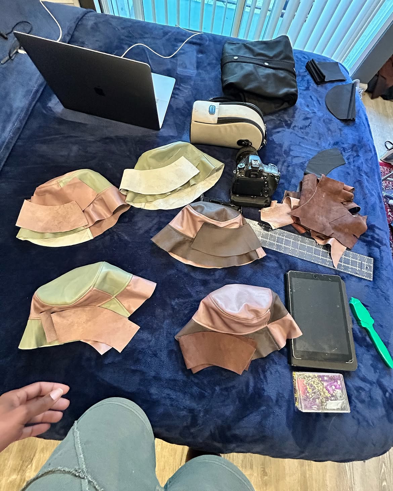
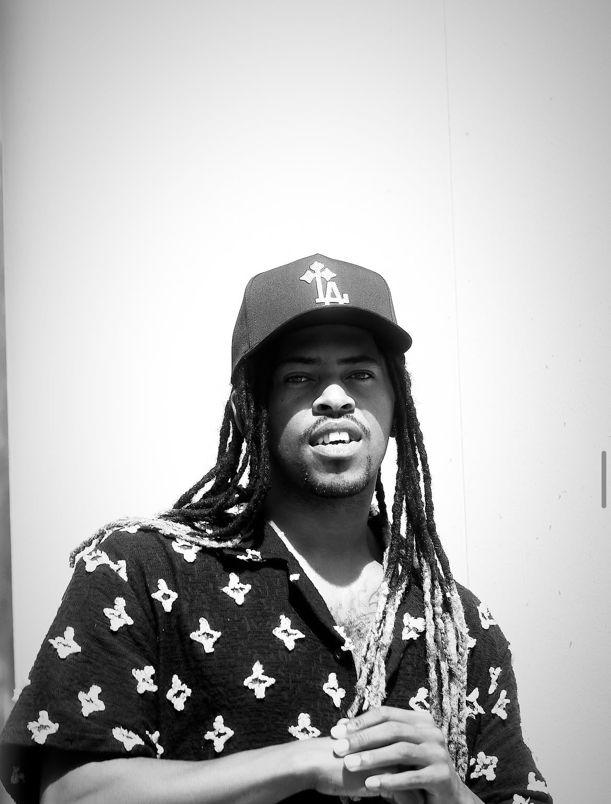
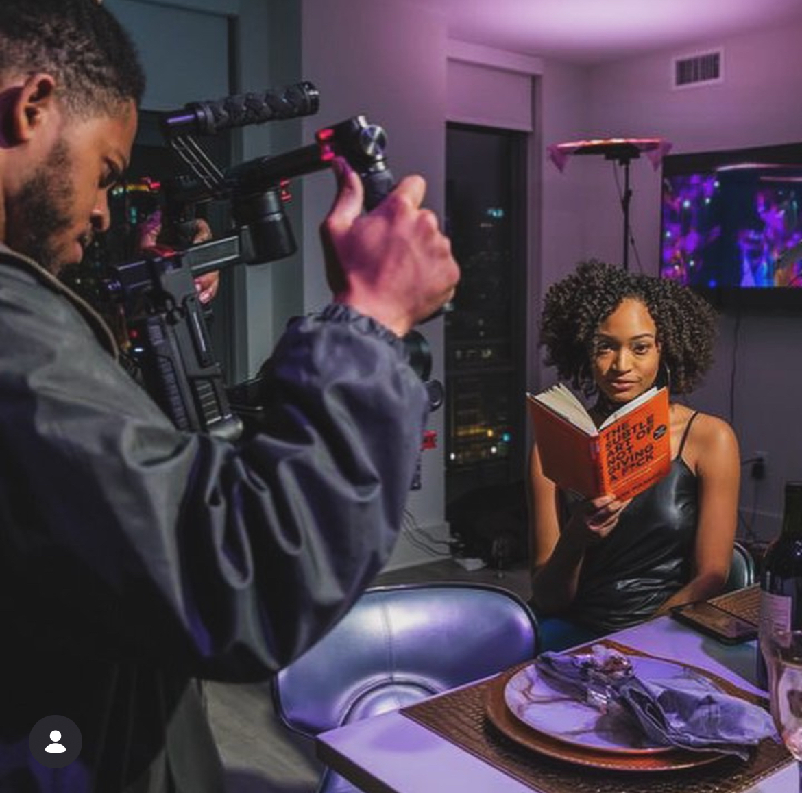
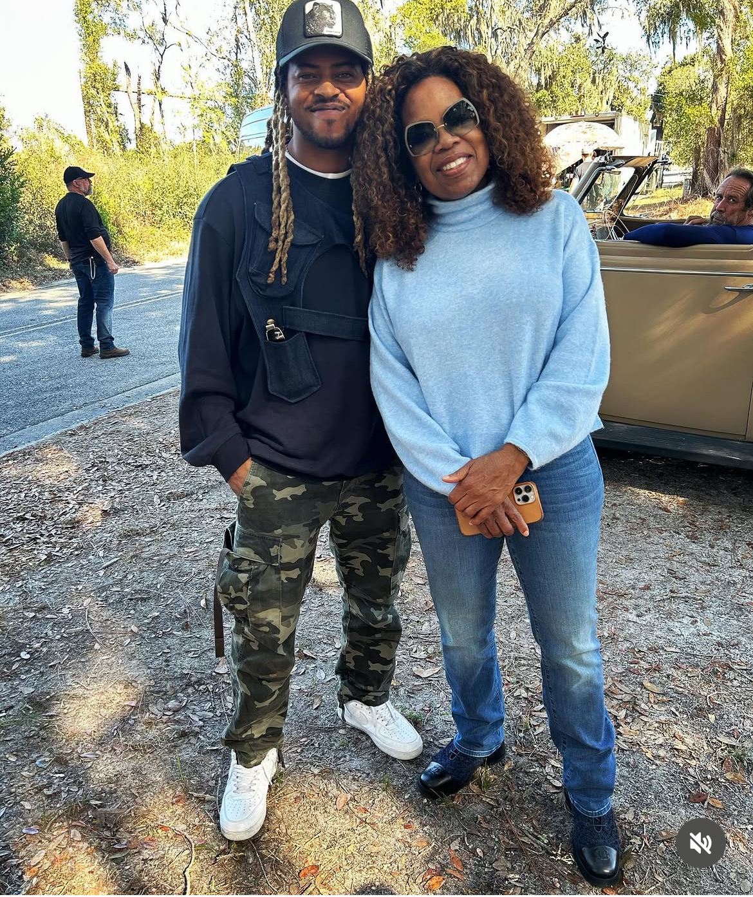
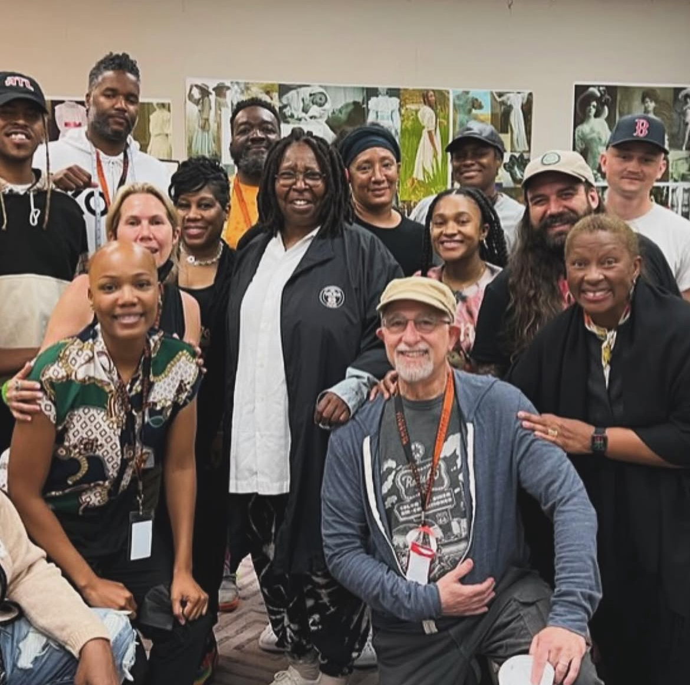
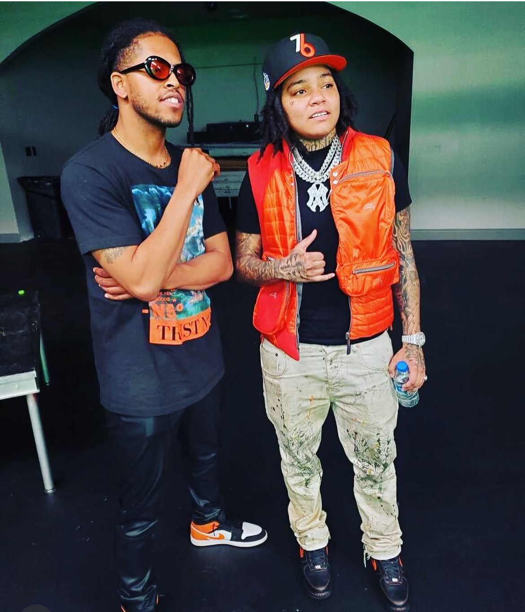
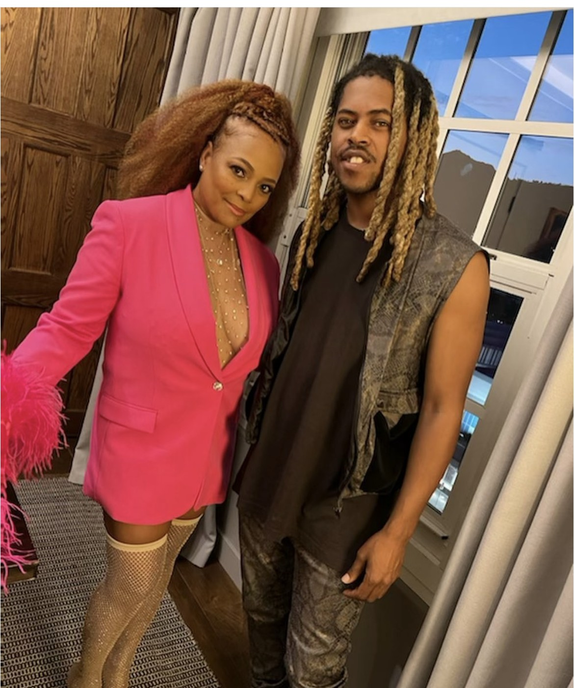

Garment construction
Pattern cutting, bespoke material assembly, and cut-and-sew tactile fabrication process.
Marcus Saafir
North Carolina raised. Los Angeles based. Marcus Saafir works across fashion, film, photography, and music.
A multidisciplinary practice fusing bespoke cut-and-sew craftsmanship, dynamic visual storytelling, and musical composition into a coherent creative voice.

A curated photographic sequence capturing tactile garment construction, film set production, location work, and creative relationships.

Pattern cutting, bespoke material assembly, and cut-and-sew tactile fabrication process.

Cinematography, dynamic gimbal operation, and visual frame composition on set.

Field production, environment staging, and collaborative presence in active environments.

Working within multidisciplinary ensembles across large-scale productions and creative projects.

Individual creative synergies, personal styling, and artist connections.

Bespoke styling, tailored silhouette curation, and high-profile event collaboration.
This gallery serves as the foundational visual journal of SAAFIR’s multidisciplinary practice. Verified project case studies, finished garment capsules, full photography collections, and cinematography video reels will be archived as releases are documented.
Apparel by Marcus Saafir.
LIA is the independent apparel label established by Marcus Saafir, channeling modern silhouette exploration, tactile material selection, and Los Angeles street-tailoring sensibility.
Rooted in an uncompromising approach to cut, drape, and textural contrast, LIA operates as a distinct creative venture within Marcus’s artistic ecosystem.
Original capsule silhouettes, seasonal releases, and label identity curated directly by Marcus Saafir.
Follow @staylia.la ↗Custom cut-and-sew commissions, wardrobing, pattern drafting, and production direction available for private clients & productions.
View Creative Services ↓Available for bespoke garment commissions, commercial and narrative film productions, specialized cinematography, photography, and songwriting collaborations.
Tactile craftsmanship from original pattern drafting to finished bespoke apparel.
Precision hands-on cutting, material handling, and artisanal assembly of custom garments.
Comprehensive garment building, tailoring, structural reinforcement, and finishing.
Original concept creation, silhouette drafting, textile curation, and apparel design direction.
On-set technical execution, dynamic cinematography, aerial captures, and post-production.
Studio and on-location camera operation with dynamic framing and movement control.
Cinematic aerial footage, spatial perspective captures, and location surveying.
Music videos, live event coverage, behind-the-scenes documentation, and promotional visuals.
Editorial portraits, studio sessions, lookbooks, and production stills.
Post-production assembly, pacing, color treatment, and narrative sequencing.
Melodic and lyrical composition bridging contemporary soundscapes with storytelling.
Lyrical craftsmanship, melodic structuring, conceptual writing, and collaborative studio sessions.
A creative visionary working at the intersection of tactile craft and visual culture.
Marcus Saafir, known artistically as SAAFIR, is a multidisciplinary creative visionary originally from North Carolina and currently based in Los Angeles, California.
His practice spans cut-and-sew garment construction, bespoke clothing design, camera and drone operation, videography, photography, post-production video editing, and songwriting. Marcus moves fluidly between the physical discipline of fabric crafting and the kinetic storytelling of film and music.
Throughout his career, he has collaborated and worked alongside acclaimed industry figures including veteran costume designer Francine Tanchuck, Kim Fields, Normani, Brazilian recording artist Anitta, Chris Stokes, Marques Houston, and Fantasia, as well as Grammy-winning and nominated producers and artists including Lee Major Kid and James Phillips (So So Def / BME), among others.
A selected index of productions, brands, organizations, and media publications associated through creative collaboration, production engagements, and industry practice.
Initiate a dialogue regarding garment design commissions, cinematography and production assignments, photography bookings, or musical collaborations.